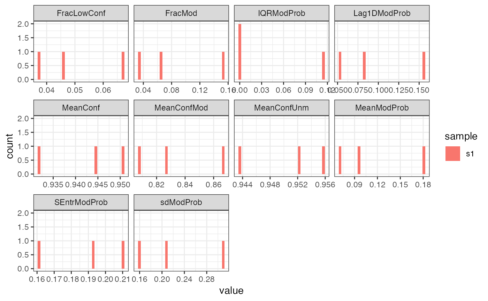

This function plots histograms of the various per-read summary statistics
calculated by addReadStats.
plotReadStats(se)A RangedSummarizedExperiment,
typically generated by addReadStats.
A ggplot object.
library(SummarizedExperiment)
modbamfile <- system.file("extdata", "6mA_1_10reads.bam",
package = "footprintR")
se <- readModBam(bamfile = modbamfile, regions = "chr1:6940000-6955000",
modbase = "a", verbose = TRUE)
#> extracting base modifications from modBAM files
#> opening input file /Users/runner/work/_temp/Library/footprintR/extdata/6mA_1_10reads.bam
#> reading alignments overlapping any of 1 regions
#> removed 1728 unaligned (e.g. soft-masked) of 20554 called bases
#> read 3 alignments
#> finding unique genomic positions...
#> collapsed 8350 positions to 6057 unique ones
se <- addReadStats(se)
plotReadStats(se)
